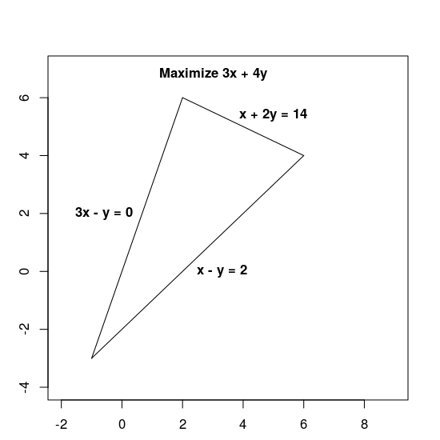
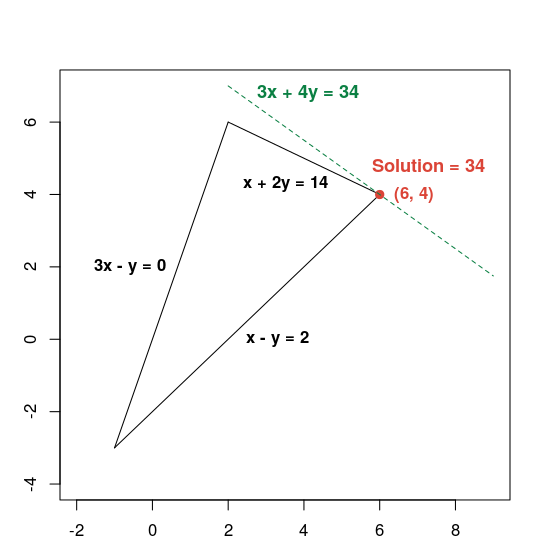

https://developers.google.com/optimization
More elements = more connections = exponential complexity
| Elements | Factorial | Combinations |
|---|---|---|
| 1 | 1! | 1 |
| 2 | 2! | 2 |
| 3 | 3! | 6 |
| 4 | 4! | 24 |
| 5 | 5! | 120 |
| 6 | 6! | 720 |
The number of combinations spirals out of control.
Brute force of a solution becomes impractical in finite time
Finding a solution instead of the solution.
When constraints can be applied to a large dataset the number of feasible combinations can be greatly reduced.
Maximize 3x + 4y subject to the following constraints:
This triangle represents the possible solutions

The green line represents the solutions. This is where they intersect maximally.

This is an example of linear optimisation.
Constraint optimisation is similar principal but more complex.
So they provide a tool for solving these hard problems installable via nuget
Or how I used OR-Tools. After more research I found I've used a very small fraction of what it can do.
Load in the json files
| Variable | Description |
|---|---|
| ingredients | Macro information for ingredients in my house |
| target | Target information |
Create arrays of macro values per gram
(Macro in grams / Nutritional weight)
I needed to add a multiplication factor to make decimals into integers
Variables are the values that the solver can change when trying to solve the problem
In this case each variable has an included and amount that determine if the ingredient is included and how much is included.
| Type | Description |
|---|---|
| IntVar | Integers value between min and max |
| BoolVar | Specialised IntVar (0/1) |
Variables are named which is useful for debugging.
| Function | Description |
|---|---|
| ScalProd | A scalar product. Multiply each side of the array with the same index. Then Sum. |
| Sum | It's a sum. Used to count the number of included ingredients (0 or 1). |
Two types of constraint
| Function | Description |
|---|---|
| model.Add | This adds an expression as a constraint. |
| model.AddLinearConstraint | A range check |
It's at this point I realised I'm more doing Linear Optimisation when I looked at intellisense for the model.
I think the only unusual thing here is that you need to give the variable to the solver to pull the value out